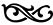

BİR
BİLMEK DEĞİŞTİRMEK İÇİNDİR

“Nesnelerin dış görünüşü ile özü doğrudan örtüşseydi, tüm bilim gereksiz olurdu.”11 Dünyayı anlamak için bilim gerekiyor; çıkış sorularını felsefe soruyor ve dünya ancak insanın özne olduğu bir pratikle değiştirilebiliyor.
İnsan, duyularıyla ve aklıyla nesnelerin, olguların ve süreçlerin çoğul, çelişkili, karmaşık hareketini, oluşmakta olduğu gibi, olduğu gibi kavrayamıyor. İnsan ancak hareketi durdurarak, sabitleyerek algılayabiliyor. Hareket ise hiç durmuyor.
Gerçekliği, hareket halindeki maddenin özünü kavrayabilmenin yöntemi soyutlamadır. Çıkış noktası her zaman somuttur. Amaç, somutun en önemli, başat öğelerini bulmak, çekip çıkarmak12* ve tüm yapıyı onların üzerinde yeniden kurmaktır. İçinde yaşadığımız kapitalist toplumun, tüm yaşam etkinliklerini değer yasasının egemen olduğu organik bir sistem altında birleştirdiği önermesini alalım. Bu önerme ya da saptama, hiç de çıplak gözle görülebilecek gibi değildir. Kapitalist toplumda insani üretim etkinliğinin aldığı gerçek biçimler, ancak “meta”, “sermaye”, “değişen/değişmeyen sermaye”, “kullanım değeri/değişim değeri” kavramlarıyla anlaşılıyor. Gerçek süreçlerin neden göründüğü gibi olmadığını, toplumsal ilişkilerin niteliğini ortaya koyan böyle bir soyutlama, bu örnekte Marx’ın soyutlaması olmasa, bugün çoğumuza doğru gelen yukarıdaki saptamayı kolayca formüle edemezdik. Soyutlamanın ne kadar güçlü, ne kadar çözümleyici olduğunu anlatmak üzere bir tek örnek yeterli olabilir: “Marx tamamıyla özgün bir dünya görüşünü sadece iki yeni ifade kullanarak aktarmayı başarmıştır: ‘üretim ilişkileri’ ve ‘artıdeğer’.”13
Canlı algılamadan soyut düşünceye ve oradan da pratiğe… Bilgi edinmenin yolu budur.
Bilim ve teorinin soyutlamalarla geliştirilmesi, toplumsal bilimler söz konusu olduğunda çok daha kritik bir önem kazanıyor. Çünkü toplumsal bilim, doğa bilimlerinde olduğu gibi laboratuvar ve deney olanaklarından yararlanamıyor.
Doğada nesneler ve olgular vardır ama bilgi hazır durumda yoktur. Bilgiyi üreten, doğa üzerinde yaşayan, çalışan, toplumsallaşan, böylelikle olgulara düşünceyi katan insandır. Bilim, yöntemli bilgi edinme, bilgisel deneyimi, birikimi örgütleme, düzene sokma etkinliğidir.
Her yeni bilgi teorisi, her bilimsel açılış aynı zamanda bir yöntem geliştirme işidir.
“Yöntem” kavramı, bir yolun izlenmesi anlamındaki Yunanca methodos’tan geliyor. Bilgi edinmek için tutulması gereken yol, sıra, dizge anlamında kullanılıyor. Bilmediğimiz bir gerçekliği bulup ortaya çıkarmak ya da bildiğimiz bir gerçekliği başkalarına anlatmak için düşünce araçlarını sıralamak, dizmek ve kullanmak sanatıdır.
Yöntem kendi başına bilim değildir ve hiçbir bilimsel teori, hiçbir felsefe salt yönteme indirgenemez. Yöntem, eninde sonunda, bir düşünme, inceleme dizgesidir. “Olgular ancak bilginin amacına, önsel öncelik ve tercihlerine göre olgu haline gelirler… ‘Olguları’ en basitinden numaralandırmak, onları hiç yorumlamadan sıralamak bile bir “yorumlama’dır.”14 Lukacs’ın bu yaklaşımı çok öznel bulunabilir. Evet, özneldir ve bu düzeyde öznelliği dışlamak mümkün değildir. Yorum, yorumlayan kişinin bilgilerini, o bilgileri elde ediş yolunu, değer yargılarını, dünyaya bakışını, kısacası öznelliği içinde taşır. Sorulara ve inceleme sürecinin aşamalarına bağlı olarak en temel kavramların bile değişim geçirmesi kaçınılmazdır. Bütün bunlardan varılacak sonuç ise, genel olarak yöntemin ve birazdan üzerinde daha genişçe duracağımız diyalektik ve tarihsel materyalizmin ezberlenerek öğrenilecek ve uygulanacak bir şey olmadığıdır! Ya da, Isac Deutscher’in benzetmesiyle diyalektik, Marksist düşüncenin grameridir; gramerin yaşayan dille öğrenilmesi gibi, diyalektik de, formülleri düşünerek değil, “tarihteki ve çağdaş sorunlardaki özgül, geniş ve hayati konular yakalanarak sergilenebilir.” 15
Felsefenin üç önemli sorusu
1) Madde mi, düşünce mi, varlık mı bilinç mi önce gelir? 2) Hareket mi, durum mu? Ya da hareketin kaynağı nedir? 3) Dünya bilinebilir mi? Dünya değiştirilebilir mi?
Materyalizm, evrenin ve dünyanın düşünce ve ruhtan bağımsız olarak hareket eden maddi bir gerçeklik olduğundan, maddenin ilk veriyi oluşturduğundan yola çıkar. İdealizm, bilincin maddi varlıktan önce geldiğini, maddi dünyanın, doğanın, varlığın ancak insan bilincinde, duyularında, tasarımlarında var olduğunu ve bunların en yüksek biçimi olan bir yüce ruh tarafından var edildiğini savunur. Felsefenin bu ilk sorusu üzerine burada daha fazla durmanın, tartışmanın gereği yok. İdealizmin, dinsel düşünce ve örgütlenmenin tırmanışta olduğu bir dünyada, ele alınacak her konunun, yaşamın her yönünün, “tartışmayı” değil, idealist dünya görüşleriyle bire bir hesaplaşmayı gerektiriyor.
Öteki iki sorunun ve verilecek yanıtların ise materyalistler arasında da aynı derecede açık olmadığını düşünmemiz için birçok neden var. “Hareket” ve dünyanın “bilinebilir” olup olmadığı konuları, hem yükselişteki idealist ve metafizik düşüncenin hem de kaba materyalizmin saptırıcı etkileri altındadır.
Marksist terminolojide “metafizik”in iki tanımı var. Marx ve Engels, metafiziği şeylerin değişmez, birbirinden bağımsız olarak var olduğunu savunan, doğayı ve toplumu değişmezlik ve bağıntısızlık temelinde ele alan bir yöntem olarak tanımladılar. Daha geleneksel ve felsefi tanım ise Aristo’ya aittir. Aristo, bu sözcüğü, evrensel ve soyut kavramlarla ilgilenen felsefe anlamında kullandı. Yunanca’da meta ta physika, “fizikten sonrası”, “fizik ötesi” anlamına geliyor. Bu kavramı şimdi, maddi gerçekliğin ötesi, soyut idealizm anlamında kullanıyoruz.
Metafizik önce hareketin yadsınması, sonra da harekete yol açan kaynağın mekanizmde ve “dışarıda” aranmasıdır.
Kopernik’in, gökcisimlerinin “dönüşü” anlamında “revolution” kavramını uygun bulduğu buluşunu önemli ve “devrimci yapan”, binlerce yıldır dünyanın hareketsiz olduğunu düşünen insana dünyanın hem kendi çevresinde hem de güneş çevresinde döndüğünü göstermesiydi. Aristo düşüncesine büyük bir darbeydi. Aristo sisteminin, fiziğinin temel ilkesi, hareketin her durumda dış bir güç tarafından başlatıldığı biçimindeydi. Dünyanın dışında göksel cisimlerin hareketini sağlayan bir güç vardı: Tanrı!
Newton’un hareket yasaları ise statik ve mekanikti. Bunlar değişmiyordu. Evren, en başta yerçekimi yasası olmak üzere, bu yasalara göre işleyen muazzam büyüklükte bir saat düzeneğiydi.
Maddenin önceliği anlamında materyalist, hareketin içselliği anlamında diyalektik yaklaşımla birlikte, insanın dünyayı kavramasında önemli adımlar atıldı. Maddenin var oluş biçiminin yer değiştirmekten düşünmeye, en basitinden en karmaşığına hareket halinde olduğunun kabulü; “çelişki”, “neden-sonuç”, “tarihsellik” kavram ve kategorilerinin geliştirilmesi yeni çevrenler açtı. İnsan düşüncesi, değişimin, evrimci ve devrimci evrelerden, süreklilik ve kopuşlardan geçtiği, öncülleri olmadan hiçbir şeyin bir başka şeyin içinden birdenbire çıkmadığı, hiçbir şeyin kendisinden sonraya bir şey bırakmadan kaybolmadığı, her şeyin başka şeylerden geldiği ve başka şeylere yol açtığı, tüm bunların bilinebilir yasallıklarının olduğu vb. bir doğrultuda gelişti.
Bilim nereye?
Bilimin işlevi, maddenin ve toplumun hareket yasalarını bulmaktır. Bilimde yasalar soyutlama ve kavramlaştırma yoluyla geliştiriliyor; gerçek hareketten kaynaklandıkları ölçüde “yasa” oluyorlar. Maddede ve toplumda, birbirine koşut ya da karşıt birçok hareket olduğu, bunlar birbirleri üzerinde itici, çekici, güçlendirici, zayıflatıcı, nötrleştirici etkiler yaptıkları için yasalar ancak eğilimler olarak işliyor.
Bugün bilim ve bilimsel düşünce, işbölümü ve uzmanlaşmanın amaç haline getirilmesiyle birlikte özün bütününü ve derinliğini kavrama gücünü yitiriyor. Aydınlamadan bu yana ilk kez “bilim” evrenin ve yaşamın doğası üzerine görenekçi (skolastik) ve kurgucu (spekülatif) düşüncenin aracı durumuna geliyor. Bilim, düşünceyi maddenin ve hareketin önüne geçiren tanımıyla felsefeden koparak gerçek gelişme yoluna girmişti. Bugün, eskiden idealist felsefenin yaptığı şeyi “bilim” yapıyor. Durumu tersine çevirmek, bunun için de evrensel ve genel bir dünya görüşü tanımıyla felsefeyi öne çıkarmak, deyim yerindeyse bir bilim felsefesi geliştirmek gerekiyor.
Engels kendi zamanında henüz bir eğilim düzeyinde olan, bugün burjuva bilimi iyiden iyiye içine alan, bütünsellikten yalıtılmış, ileri derecede sınıflandırılmış, uzmanlık alanlarına ayrıştırılmış yaklaşımı şaşırtıcı bir öngörüyle şöyle eleştirmişti:
“Doğanın tekil parçalarına bölünmesi, çeşitli doğal süreç ve nesnelerin belirli sınıflara ayrılması, organik cisimlerin ilk yapılanışlarının anatomik yönlerinin çeşitliliği içinde irdelenmesi: Doğanın bilinmesinde son dört yüzyılın bize getirmiş bulunduğu büyük ilerlemelerin temel koşulları işte bunlardı. Ama bu yöntem bize, doğal nesne ve süreçleri tek başlarına, büyük genel bağlantı dışında (abç), bunun sonucu hareketlerin içinde değil, hareketsizlikleri içinde; özsel bakımdan değişken öğeler olarak değil, değişmez öğeler olarak; yaşamları içinde değil ölümleri içinde şöyle böyle kavrama alışkanlığını da geçirdi. Ve Bacon ile Locke sayesinde, bu görüş biçimi, doğa biliminden felsefeye geçtiği zaman, son yüzyılların özgül darkafalılığını, metafizik düşünce biçimini meydana getirdi.”16
Engels sorunun iki önemli yönüne işaret etmiştir. Gerçekten de, bilimsel çalışmanın uzmanlık alanlarına ayrılması, sınıflandırma, en mikro düzeye kadar ayrıntıların incelenmesi bilim yolunda ilerlemenin önemli araçlarıdır. Öte yandan aynı araçlar, nesneleri, süreçleri ve bunların incelenmesini birbirinden kopardığı, durağanlaştırdığı ölçüde olumsuz bir işlev görmekte, doğa bilimleri alanından toplumsal alana kayıldığında ise düpedüz saçma sonuçlara varılmaktadır. Engels’in söylediklerine bugün, uzmanlaşmanın doğa bilimleri alanında da ciddi sorunlar yarattığını eklemek gerekiyor.
Bilgiyi, her biri yalnızca kendisine ait kavram ve yöntemlere sahip, birbirine ilgisiz disiplinlerin dar alanlarına hapsederek parçalara ayıran egemen üniversiter-akademik yaklaşım bizi, “birbiriyle uyumsuz notaların çıkardığı kulak tırmalayıcı seslerin”17 gürültüsüne teslim ediyor. Böyle bir karmaşa içinde, bilgi ile pratik arasındaki bağlantı kopuyor. Bilim dünyası, çok az şey hakkında çok şey bilen akademisyenlerin, “bilim” insanlarının, egemenliği altında kısırlaşıp, yoksullaşıyor.
Bir başka önemli sorun, matematiğin, matematik modellerin özellikle doğa bilimlerinde, ama ekonomi gibi toplumsal bilim alanlarında da egemenlik kurmasıdır.
Evrenin oluşumunu açıkladığı savunulan büyük patlama teorisinin biri çürütüldüğünde yenisi sahneye çıkan çeşitlerinde gözlem giderek daha az başvurulan bir araçtır; onun yerine matematik modeller ve keyfi kabuller geçmektedir. 1980 yılında dünyada yayımlanan kozmoloji tez çalışmalarının yüzde 95’i matematik modellere dayanıyordu.18
“Büyük patlama” teorilerine göre, patlamadan önce madde ve zaman yoktu. Patlamadan öncesi hiçlikti. Ünlü kara delikler teorisi de esas olarak matematiksel bir modeldir. Gerçek anlamda bir maddi cisim olmayan, bir yüzeyi bulunmayan, uzayda bir iç bölgeyi bir dış bölgeden ayıracak biçimde çizilen bir sınır çizgisi olarak tanımlanan kara deliklerin bir zamanlar var olan bir cismin içe çökerek, derinliklere düştüğü ve var olmaktan çıktığı iddia ediliyor.19 Zamanın Kısa Tarihi, Büyük Patlamadan Kara Deliklere başlıklı kitabında bu teoriyi popülerleştiren Stephen Hawking gözlemin yerine neredeyse tümüyle matematiksel modelleri geçirdi. Hawking açıkça şunu söyledi: “Kimse bir matematik teoremiyle gerçekten tartışamaz.”20 Bu, hiçbir matematik önermenin maddi-fiziksel verilerle kanıtlanamayacağını ileri sürmek anlamına geliyor.
Soyut matematiğin bilim açısından taşıdığı sorun, dilinden, düşünme aracından geliyor. Soyut matematik her olguyu, son çözümlemede ölçümle elde edilen sayısal bir değer olarak görüyor. Oysa olgular her durumda ölçülemez. “Matematikte belirsize, sonsuza varmak için belirli, sonlu terimlerden başlamak gerektiğinden dolayı pozitif ya da negatif tüm matematiksel seriler 1’le başlamak zorundadır, aksi takdirde hesaplama işinde kullanılamazlar. Ama matematikçinin mantıksal gereksinimi gerçek dünya için zorunlu bir yasa olmaktan çok uzaktır.”21
Matematiğin toplumsal bilimlere el atması ise daha da büyük bir problem oluşturuyor. Matematiğin ekonomiye uygulanmasıyla, istatistik ve ekonometri teorik çözümlemenin yerine geçiyor.
Matematiksel soyutlamaların bilimsel anlamda işlevli olmaları en iyi matematiksel modelin bile gerçekliğin ancak kaba bir kestirimi olduğunu unutmamak koşuluyla olanaklıdır.
Bilim başlığındaki sorunlar bunlardan ibaret değil. Doğrultu ise belli. Evrenin oluşumunu “büyük patlama”yla, bir “büyük çatırtı”yla, açıklayan yaklaşımlar sonuç olarak yaradılış ve din felsefesine sığınıyorlar.
Şimdi, kaldığımız yerden felsefe konusuna devam edebiliriz. Felsefenin önemine ve yeniden öne çıkarılmasına yaptığım vurgu, “felsefeden çıkış”ın öncüsü Marksizm karşısında ne anlama geliyor? Özetle şu: Marx ve Engels “felsefe”yi esas olarak yanıtı yaşamda olan sorulara “felsefi” yanıtlar vermeye kalkıştığı ve insanı toplumsal ilişkilerin nesnesi olarak görüp gösterdiği için eleştirmişlerdi. Toplumsal ilişkileri değişmeyen belli yasalara bağımlı bir nesnellik olarak alan filozoflar, insanı nesne olarak görüyor, esas olarak bu nedenle de dünyayı yorumlamakla yetiniyorlardı. Oysa insan, müdahale edebileceği bir gerçeklik içindeydi; özneydi. Felsefeyi aşmak gerekiyordu; çünkü felsefe, zihnin ürettiği düşüncelerin doğruluğunu, yine düşünce dünyasının soyut gerekçeleriyle kanıtlamaya çalışıyordu. Oysa bir düşüncenin nesnel gerçekliği doğru soyutlayıp soyutlamadığı ancak pratikte sınanabilirdi. Marx ve Engels’e göre, gerçeğe ulaşıldığı zaman felsefe, bağımsız bir bilgi dalı olarak varoluş nedenini yitirecekti.
Bugünkü durum nedir? Farklı bilim dalları, bütünlük içindeki konumlarını netleştiremiyorlar. Öyle olduğu için, farklı bilim disiplinlerine özgü yöntemlerin tümüne yön veren genel bir bilme, bilgi edinme ortamı olarak felsefeye dönmek gerekiyor. İçinde yaşadığımız dünyayı ve doğada, toplumda ve düşüncemizde işlemekte olan temel süreçleri akılcı bir biçimde kavramak istiyorsak, o zaman bu tanımıyla felsefeye, bilimlerin bilimine gereksinim vardır.
Bilim-felsefe ilişkisi, başka terimlerle ama burada ele aldığımız içerikte Marx tarafından da formüle edilmiştir. Yaşam için bir temel ve bilim için başka bir temel olduğunu ileri sürmek Marx’ın deyimiyle “yalan”dır. Bilim, ancak, insanla doğanın ve bunları inceleyen bilimlerin evrensel birliği sağlandığı zaman gerçek bilim olur. “Bütün tarih, ‘insan’ı duyularla edinilen bilincin nesnesi haline getirmeye hazırlayıp geliştirmenin tarihidir; ‘insan olarak insanın’ gereksindiklerini, insanın ihtiyacı durumuna getirmenin tarihidir. Tarihin kendisi doğa tarihinin gerçek bir parçasıdır, doğanın insana dönüşmesinin gerçek bir parçasıdır. Zamanla doğa bilimleri, insan bilimini, insan bilimi de doğa bilimini içine alacak, yalnızca bir tek bilim olacaktır.”22 Alman İdeolojisi’nde söylenenlerden bu “tek bilim”in tarih bilimi olduğunu anlıyoruz: “Tek bir bilim tanıyoruz, tarih bilimi.”23 Tüm bilimler, son çözümlemede, doğa ya da insanlık tarihinin bir yüzünün, bir görünümünün yasalarının ortaya çıkarılmasıdır. Tarih bilimi, doğadaki ve insan toplumundaki nesnel ve öznel süreçlerin, farklı bilim disiplinlerinin kavram ve yöntemleriyle, ama ancak bugünden geçmişe bakışın sağlayabileceği bir bütünlük içinde yeniden üretilmesidir. Toplumsal ve siyasal süreçler söz konusu olduğunda bunun anlamı, insanlık tarihinin harekete geçirici öğesi olarak sınıf çelişkilerinin ve sınıf mücadelesinin esas alınmasıdır.
Bu bakışın, bilimi de, materyalist dünya görüşünü de her türlü kabasabalıktan uzaklaştıracağını, “bilimsel sosyalizm” kavramının yol açtığı bozulmalara karşı panzehir işlevi göreceğini düşünebiliriz.
“Bilimsel sosyalizm”
Marx’ın felsefeye, daha özel bir alan olarak ekonomi politiğe olduğu gibi genel olarak bilime yaklaşımı da eleştireldir. Marx, “bilim” başlığını da yanlış ve yalan olanın eleştirisi üzerinden, bu anlamda olumsuz ve karşıt bir konumdan ele almıştır.
Doğa bilimleriyle ve genel olarak bilim alanındaki gelişmelerle daha yakından ilgilenen Engels’te ise bilimselliğe daha olumlu ve güçlü bir vurgu vardır ve sonradan sosyalizmin bilimselliği, “bilimsel sosyalizm” üzerine determinist, hatta dogmatik bir anlayış kuranlar bu vurgulardan güç almışlardır. Engels, bu görüşleri ütopik sosyalizmi eleştirirken ileri sürmüştü; deterministler ise sosyalizmin bilimselliğini reel sosyalizmin tezi durumuna getirdiler.
Bilimselliğe, nesnelliğe aşırı vurgu İkinci Enternasyonal, Ekim Devrimi sonrası komünist hareket ve Komintern üzerinde aynı kökten güç alan farklı eğilimlerin yeşerip serpilmesine yol açtı.
Örneğin, Bernstein, teknolojiyi işçi sınıfının karşısındaki üstün bir güç olarak yüceltmiş, oradan da sermaye düzeninin evrimci yoldan dönüşeceğini, uzlaşmaz sınıf karşıtlığının kalkacağını, siyasal öncülüğün amorf yığınlara geçeceğini savunan bir çizgiye kaymıştır. Teknolojik gelişmeyi öne çıkaran görüşler, “insanlığın global sorunları”, “uygarlık” türünden sınıf ve mücadele dışı kategorilere başvurmuşlardır. Bu yaklaşımların, yakın geçmişte ve bugün anti-tekel, anti-küresel vb. çeşitli adlar altında, ama son çözümlemede, “madem ki değiştiremiyoruz, o halde kapitalizmi içinde yaşanır bir düzen haline getirelim” noktasına varan görüşlere evrilmeleri rastlantı değildir. Kendilerine sorulursa, bilimsel oldukları, bilimsel-teknolojik gelişmeleri doğru okudukları için böyle düşündüklerini söyleyeceklerdir.
Bilimsellik vurgusu, Marksizme toplumsal gelişmeyi neredeyse doğal gelişme kadar kesin ve kaçınılmaz gören bir anlam yüklemiştir. Bilimsellik, nesnellikle özdeşleştirilmiştir. Ne tür kısıtlılıklar, açmazlar yaşanırsa yaşansın, tarih hep bizimledir. Lukacs, bu noktada, Engels’i “en can alıcı etkileşime, tarihsel süreçte özne ile nesne arasındaki diyalektik ilişkiye” gereken önemi vermediği için eleştirmiş, bu olmadığı zaman diyalektiğin devrimci olma özelliğini yitirdiğini yazmıştır.24
Tarihsel ve toplumsal süreçlerin insan iradesinden tümüyle bağımsız bilimsel yasalara göre işlediği önermesi, son çözümlemede özne insanı ve sınıf mücadelesini yadsımaya götürür. Tarih, insan iradesinden bağımsız nesnel bir harekete sahipse, mücadelenin hiçbir işlevi yoktur. Ayrıca, böyle ele alındığında, mücadele kavramı, tümüyle ikincil, araçsal bir yere yerleştirilmiş, tanımı değiştirilmiş olur. Önceden belli bir sona doğru ilerleyen nesnel hareket düşüncesi, mücadeleyi önemsizleştirir. Nesnel yasaların “hükmünü icra” ettiği bir dünyada insan ne yapabilir ki?
İkinci Enternasyonal döneminde ve özellikle de tek ülkede sosyalizm ve Komintern süreçlerinde bilim ve bilimsel sosyalizm pozitif içeriğiyle yüceltilmiştir. Bu yüceltişte, Marksistlerin o dönemde yüz yüze oldukları çetin sorun ve açmazlarla baş etmekte bilimden “çözüm” arayışları kadar, “bilimsellik”in sağlayacağı destek ve üstünlüklerden yararlanma isteği, bir tür pragmatizm de rol oynamış olmalıdır. Güdüsel nedenleri ne olursa olsun, sonuçta bilimsel yasaların sırlarına varmış, hatta bilgi ve bilim tekeline sahip, her şeyi bilen, yaptıkları, yapacakları her şey “bilimsel sosyalizm” olduğu için her zaman haklı ve doğru olarak kabul edilen yanılmaz bir önderlik ve siyaset anlayışı yerleşmiştir.
Tarihin ve toplumun nasıl olsa gideceği nesnel doğrultu üzerinde konumlanmak, tarihin akışına uygun yerde olmak, tarihin ve toplumun hareket yasalarının, “bilimin” “bizimle” olduğunu düşünmek ve söylemek, kuşku yok, kendi başına bir güç senaryosudur. O kadar da kolaycıdır. Bir arkadaşım, 1960’lı yıllarda, annesini TİP’in bütün sorunları, alanlarında uzman bilim adamlarının yanılmaz plan ve uygulamalarıyla çözeceğini açıklayarak kazandığını anlatırdı. “Bilimsel sosyalizm”, örneğin 1970’li yıllarda, Türkiye’de hem sosyal demokratlara hem de komünistlere mesafe koymak isteyen sendikacıların dillerinden düşürmedikleri bir kavramdı. Kolaycılığa örnek olmak üzere bir kişisel tanıklık: 1970’lerin ortasında, TKP’nin uzun bir aradan sonra Türkiye’de yeniden güç olduğu, işçi sınıfından, aydınlardan ve gençlikten taze güçler kazandığı bir dönemde, yurtdışında o zamanki politbüro üyesi bir yoldaşla tartışıyorduk. Ben partinin örgütsel bakımdan hızla büyüdüğünü, program ve siyasal çizgisinin ise büyüyen hareketin gereksinmelerini karşılayamadığını, bu sorun çözülmezse partinin ciddi güçlüklerle karşılaşacağını söylüyordum. Yoldaş ise hiçbir sorun görmüyordu. Bana, durmadan “Sen merak etme, Sovyetler Birliği’nde aklına gelecek her konuda bilim adamlarından oluşan masalar var. Gereksindiğimiz her konuyu onlardan sorup öğreniriz” diyordu. Bu kolaycı yaklaşım sonradan büyük sorun ve sıkıntılara yol açtı.
Marksizm bilimsellik iddiası taşır ve bilimsel yöntemler kullanır, ancak ne teoriye, ne salt bilime indirgenebilir. Sosyalizmin kendinden menkul bir nesnellik, yanılmazlık, mutlaklık anlamında “bilimsel” olduğu iddiası doğru ve bilimsel değildir. Marksizmin esas yaklaşımı, “bilimsel sosyalizm” inşa etmek değil, bilimi gerçeklikle düşüncenin birbirinden ayrıldığı, işçi sınıfına, emekçilere dışsal bir disiplin olmaktan çıkarmak, tarih bilimi olarak evrenselleştirmektir. Marx’ın en büyük ve benzersiz başarısı bir tarih bilimi yaratmasıdır.
Marksizmin oluşumunda, beslendiği felsefi, teorik öncül ve kaynaklar kadar, karşıtlıklar, ideolojik ve siyasal mücadeleler de önemli rol oynadı. Diyalektik yöntem Hegelciliğin, tarihsel maddecilik Marx’ın deyimiyle “eski materyalizmin”, artı-değer teorisi Adam Smith-David Ricardo ekonomi politiğinin kapsanması, eleştirilmesi ve aşılması yoluyla geliştirildi. Marksizmin bütünsel açılımlara, sentezlere ulaşmasında, gelişmesini ve sonunda kopuşu gerçekleştirdiği sistemlerin derinliğinin ve olgunluğunun da payı oldu. Bunun gibi, Marx ve Engels’in, iki ayrı cephede, ütopik sosyalistlerle ve anarşistlerle yürüttüğü tartışma ve mücadeleler de Marksizmi etkiledi. Ütopik sosyalizmle mücadele, Marksizmin materyalist-bilimsel yönünü sivriltti; anarşizmle ayrışma, devrimci-idealist yaklaşımlara, Marx’ın deyimiyle “devrim simyacılığına” karşı bağışıklık kazandırdı. Öte yandan, bu iki cepheli tartışma ve mücadelelerin bilimsellik vurgusunu koyulaştırıcı, politik örgütlenme, strateji alanlarındaki girişkenliği güdükleştirici bir etkisi de oldu.
Diyalektik ve tarihsel materyalizm
Bilebilir miyiz, ya da neyi ne kadar bilebiliriz? Nasıl bilebiliriz?
Engels, fiziksel, zihinsel ve tarihsel dünyadaki iç bağlantıların son, kesin ve tam bir sistemi inşa edilmiş olsaydı “insan bilgi alanının sınırlarına varmış olurdu” diye yazdı. Bu ise saçma ve anlamsızdı. İnsanlığın karşı karşıya olduğu, bilimdeki gelişmenin ve aynı zamanda sorunun kaynağı olan çelişki şudur: “Bir yandan, tüm iç ilişkileriyle dünya sistemi üzerine eksiksiz ve ayrıntılı bir bilgi edinmek gerekmektedir ve öte yandan hem kendi öz nitelikleri ve hem de dünya sisteminin niteliği nedeniyle, bu görev hiçbir zaman tümüyle tamamlanamamaktadır. Ama bu çelişki, yalnızca iki etkenin - dünya ve insanın- doğalarından kaynaklanmamakta, aynı zamanda tüm entelektüel gelişmenin temel kaldıracı olmaktadır.”25 Entelektüel gelişmenin temel kaldıracı, eksiksiz ve ayrıntılı bilgi edinmenin gerekli ve olanaklı olması ile hiçbir zaman tamamlanamayacak olması arasındaki çelişkidir. Bilim, bu çelişki üzerinden ilerlemektedir.
Şimdi sıra çelişkilerin felsefesi sayılan diyalektik üzerine kısa notlarda ve bugün dünyanın bilinemezliği tezini yeni biçimlerde ileri süren kimi görüşlerde.
Bu altbaşlık altında diyalektik tarihsel materyalizmin yasalarının, kategorilerinin, sorunlarının ayrıntılı ve bütünlüklü incelemesine, kitabın öngörülen amaç ve sınırlarını zorlamak istemediğim, konu başka birçok kaynakta işlenmiş ve irdelenmiş olduğu için girişmeyeceğim. Tartışmalı ve sorunlu olduğunu düşündüğüm kimi başlıklarla ilgili notlardan ve yeniden ısıtılan “dünya bilinemez” konusuyla ilgili değinmelerden sonra “tarihin yönü”, “nedensellik”, “bütünsellik” sorunlarını irdelemeye çalışacağım.
Bu bölümün girişinde yöntemin sınırlarına işaret etmiştim. Eklenecekler var.
Diyalektik materyalizm, maddede hareketi kavrama yöntemidir. Lenin’in deyişiyle, “Şeylerin diyalektiği, düşüncelerin diyalektiğini üretir ve tersi doğru değildir.”26 İdealist diyalektikten farklılığın özü budur. Düşüncenin diyalektiği maddeyi üretmez!
Diyalektik düşüncenin ayırt edici noktası, yalnızca değişimi ve hareketi esas alması değil, hareketi ve değişimi çelişkiye bağlamasıdır. Diyalektik hareket yasası, çelişki ve iç dinamik yasasıdır. Hareketi çelişki doğurur ve hareketin kendisi de çelişki halindedir. Bir dış etkenle başlatılan bir hareket ya da süreç bile ancak iç çelişkiler üzerinden oluşup olgunlaşır. Mao’nun örneğiyle, uygun bir sıcaklıkta yumurta civcive dönüşür, ama bir taşı civciv yapabilecek bir sıcaklık yoktur.27
Çelişki, varlığa hareket kazandıran temel varoluş biçimidir. Niceliğin niteliğe dönüşmesi ve yadsımanın yadsınmasıyla birlikte diyalektiğin üç temel yasasını oluştururlar.
Diyalektik teori bir nesnenin aynı anda hem var olduğunu ve hem de var olmadığını, içinde kendi var-olmayışını taşıdığını ileri sürmektedir ve bu şu anlama gelmektedir: Bir nesne istikrarla değişebilirliğin, olumsuzla olumlunun, ölüp gitmekte olanla yaşama başlayanın vb. birliğidir. Bu, her nesnenin, her olgunun karşıtların birliği olması anlamına gelir. Bu ise her şeyden önce karşıt yön ve eğilimlerin tüm nesnelere içerilmiş olduğunu ortaya koyar. Gelişmenin dinamiği budur.
Karşıtların birliği ve niceliğin niteliğe yükselmesi atom çekirdeğinden başlayarak var. Tüm evren moleküllerden, atomlardan ve atomaltı parçacıklardan oluşuyor. Her şey, son derece güçlü bir şekilde etkileşen küçük tanecikli artı ve eksi parçaların birliğidir. “Atomun çekirdeği içinde iki karşıt kuvvet bulunmaktadır: çekme ve itme. Bir yanda sınırlanmamaları halinde çekirdeği şiddetle paramparça edecek elektriksel itmeler vardır. Diğer yanda çekirdekteki parçacıkları birbirine bağlayan güçlü çekim kuvvetleri vardır. Ama bu çekim kuvvetinin de, ötesine geçildiğinde bir arada tutma yeteneğini yitirdiği kendi sınırları vardır.(…) Kritik bir nokta aşıldığında, bağ kopar ve nitel sıçrama meydana gelir. Büyük bir su damlası gibi dağılmanın eşiğindedir. Çekirdeğe ekstra bir nötron eklendiğinde dağılma eğilimi hızla artar. Çekirdek, büyük miktarda enerji açığa çıkararak şiddetli biçimde birbirinden uzaklaşan daha küçük iki çekirdeğe bölünür. Nükleer fizyonda olan budur.”28
“Bu kesintisiz süreç yoluyla evren kendisini tekrar tekrar kurar ve yeniden kurar. Demek ki herhangi bir dış kuvvete, klasik fizikte olduğu gibi ‘ilk itişe’ gerek yoktur. Maddenin, kendi nesnel yasaları uyarınca sonsuz, duraksamasız hareketi dışında başka hiçbir şeye gerek yoktur.”29
Çelişkilerin toplumsal süreçlerde, sınıf mücadelesinde gerçek harekete ve dönüşümlere yol açması ise toplumsal özneler, aktörler tarafından kavranmalarına bağlıdır. Örneğin, mülksüzlük-mülkiyet karşıtlığı emek-sermaye çelişkisi olarak kavranmadığı sürece, pratik sonuçlar yaratmayan bir karşıtlık olarak kalır.
Deyim yerindeyse “bilinçsiz” diyalektik doğada ve toplumda işlemektedir.
Doğada, toplumsal yaşamda niceliğin niteliğe dönüşmesinin yüzlerce örneği var. En bilinen örneğiyle suyun kaynaması ya da donmasından, bir çığın oluşumuna, sermaye birikiminin belli bir noktasında tekelleşmeyi olanaklı kılmasından, mücadele birikiminin devrimci kalkışma ve meydan okumalara yükselmesine kadar. Düşünmek ve diyalektik biçimde düşünmek aklın keyfi bir kurgusu değil, doğada ve toplumda yaşanan gerçek ilişkilerin kavranmasıdır. Kömür ve elmasın kimyasal bileşimleri aynıdır; karbondur. Fark, kömür ve elmasın uğradıkları basınç derecesinden kaynaklanır. Bu bilindiği zaman, karbon laboratuvarda elmasa dönüştürülebilir. 1955’te dev tekel GEC, 2500 c derece sıcaklık ve 100.000 atmosfer basıncı altında grafiti elmasa çevirmeyi başarmıştır. 30
Yadsımanın yadsınması, aynı anda hem yok saymak hem de saklamak anlamındadır. Bir tohum çiğnenirse, diyalektik olmayan bir içerikte yadsınmış olur. Filizlendiği zaman ise filiz olarak kendini yadsımıştır ve bitki olmaktadır; bir sonraki aşamada yeni tohumlar verecek, kendini bir kez daha yadsıyacaktır. Yadsımanın yadsınması hiçbir zaman olgunun ya da düşüncenin başlangıç durumuna geri dönüşü değildir; eski biçimlerden nitel olarak daha yüksek bir düzeyde yeniden ortaya çıkıştır.
Diyalektik, doğada, toplumda ve düşünce tarihindeki gelişmeleri, aynı süreçlerin tekrarlandığı kapalı bir döngü olarak değil, hiçbir şeyin kendini aynı biçimde tekrarlamadığı, ucu açık bir gelişme biçimi olarak tasarlar. Tüm tarih ve düşünce tarihi çelişki yoluyla sonsuz bir gelişme sürecidir.
Kısa notları iki uyarı ile sonuçlandırabiliriz. Diyalektik her şeyi açıklamaya gücü yeten katılaşmış bir tez-antitez-sentez üçlemesi değildir. Diyalektik, bundan çok, ortaya çıkabilecek olası bütün önemli değişim ve etkileşimleri kavramamıza yardım eden bir düşünce biçimidir. “İncelemeye çalıştığımız gerçekliğe ait öğeleri nasıl düzene sokacağımızı, bu gerçekliğe ilişkin elde edilen çıkarımları genellikle diyalektik bir şekilde düşünmeyen diğer insanlara nasıl aktaracağımızı gösteren bir kılavuzdur.”31
Örneğin, diyalektikçi olmayanlar genellikle ayrıntılara saplanıp bütünü, bütünselliği kaçırırlar. Yoldaş diyalektikçilerde ise sık sık bütünü öne çıkarma ve genelleme uğruna ayrıntıları atlama biçimindeki bir toptancılık ve kolaycılık, nicel birikimi, değişimin hızını abartma, karşıt öğeleri küçümseme eğilimleri ortaya çıkmaktadır.
Bilebilir miyiz?
Agnostisizm, bilinemezcilik Yunan sofistlerinden Kant’a, Auguste Comte’tan Spencer’e, Camus’dan Sartre’a sürüp gelen ve bugün çok moda olan bir düşünce okuludur. Düşünce dizgesi oldukça yalındır: Bilgi duyuların sonucudur; duyularla elde edebildiklerimiz dışında bir bilgiye erişemeyiz. Bu nedenle, herkes için geçerli bir bilgi yoktur. Ancak görünen, duyulan, denenebilen olgular bilinebilir. Pozitivist Auguste Comte’a göre, “Nesneler üstü metafizik kadar nesnelerin kendisi de bilinemez. Bilim bu iki bilinemez alanın ortasında, sadece duyularımızla algıladığımız deney ve gözlemlerin konusu olan olgularla uğraşabilir.”32
Bugün, kuantum fiziği alanındaki gelişmelerle birlikte kesinsizlik (belirsizlik) “ilkesi” ve bilinemezcilik ideolojisi “bilimsel”lik patenti altında yükseliştedir. Bizi ilgilendiren de işin bu yönüdür. O halde, konumuzu ilgilendiren yönleriyle ve satır başları biçiminde özel olarak fizik, genel olarak da bilim dünyasındaki gelişmelere göz atmamız gerekiyor.
Newton’un ışığın parçacık teorisi iki yüz yıl boyunca geçerli sayıldı. 19. yüzyılın ikinci yarısında İskoçyalı bilimci Maxwell ile ışığın dalga teorisi öne çıktı. 20. yüzyılın başında Max Planck, klasik dalga teorisinin pratikte doğrulanmayan öngörülerini gösterdi. Işığın ayrı ayrı parçacıklar ya da paketler (quanta) olarak geldiğini ileri sürdü.33 Yapılan başka deneylerde başka sonuçlar elde edildi. Elektronun hem bir parçacık hem de dalga olarak davrandığı, aynı anda birden fazla yerde bulunabildiği ve aynı anda birkaç farklı hareket durumu içinde olduğu ortaya çıktı. Özetle, Newton’un ışığın parçacık teorisi, Maxwell’in dalga teorisi tarafından yadsındı. O da, Planck ve Einstein tarafından geliştirilen yeni parçacık teorisi tarafından yadsındı. Ama eski Newtoncu teoriye dönülmedi. Bilimde ileriye doğru önemli bir adım atılmış oldu.
Kuantum fiziği bilim yolunda önemli bir ilerlemedir.
Madde ve enerji maddenin iki biçimidir. Madde ve enerji yaratılamaz ve yok edilemezler, yalnızca dönüştürülebilirler. Maddenin en küçük, en son parçasının ne olduğu fizik biliminin önemli bir sorusu olagelmiştir. Yüzyıl önce, maddenin en küçük taneciğinin Yunanca “bölünemez” anlamına gelen atom olduğu kabul ediliyordu. 1928’de atomaltı parçacıklar olarak proton, elektron ve foton keşfedildi. Bunları başkaları izledi. En son kuark’ın maddenin en küçük, en “son” parçacığı olduğu görüşü ağırlık kazandı. Benzer savlar, geçmişte önce atom için, sonra proton için de ileri sürülmüştü. Doğrusu, bir en “son” parçacık arayışından, olgu ve süreçlere bir başlangıç ve bir son arama idealizminden vazgeçmektir. En son deneyin kanıtladığını, en son durumu “bilim” saymak bilimsel düşüncenin önündeki engellerden biridir.
Buradan, bilim dünyasında kesinsizlik ilkesinin (uncertainty principle) egemenlik kurmasında kuantum fiziğinin oynadığı role geçebiliriz.
Burada karşımıza çıkan, kuantum fiziğinin özel bir versiyonunu geliştiren önemli isim Alman fizikçi Werner Heinsberg’dir. Heinsberg, parçacık ve dalga arasındaki çelişkinin yol açtığı sorunları salt matematiksel soyutlamalarla çözmeyi denedi. 1927’de kesinsizlik ilkesini geliştirdi. Bu ilkeye göre bir parçacığın konum ve hızını aynı anda ve kesinlikle belirlemek olanaksızdır. Heisenberg, dünyanın özne ve nesne, burada gözleyen ve gözlenen olarak bölünmesi sürdüğü sürece bilimin bulunduğu noktadan ileri gidemeyeceği tezini öne sürdü. Gözlemle gözlenen arasındaki etkileşimin gözlenende değişikliklere yol açması kesin bir ölçme işlemini olanaksız kılıyordu. Mikrop, mikroskopu ve gözlem gözü etkiliyordu. Heinsberg, bir elektronun konumuna “ona bakarak” karar verebileceğimizi, “Ama eğer güçlü bir mikroskop kullanıyorsak, bu, ona, bir ışık parçacığını, yani bir fotonu çarptırdığımız anlamına gelir. Işık bir parçacık olarak davrandığına göre, kaçınılmaz olarak gözlenen parçacığın momentumunu alt üst edecektir. Bu nedenle onu, tam da gözlemleme eylemiyle değiştiririz. Uyarım öngörülemez ve kontrol edilemez olacaktır, çünkü (en azından mevcut kuantum teorisinde) ışık kuantasının saçılarak merceğe gelme açısını tam olarak kestirme ve kontrol edebilme imkânı yoktur.”34
Şöyle özetlenebilir: Nesne ile aygıt arasındaki etkileşim, olgunun ayrılmaz bir parçasıdır! Bu önermenin, yalnız fiziğe değil bilimsel ve diyalektik düşünceye önemli bir katkı olduğunda kuşku yok. Gözlemin gözleyen aygıtı, onun da gözleneni etkilemesi aklın olguyu, olgunun aklı etkilemesi demektir. Böyle anlaşıldığında tekellerin tüm ideoloji, haber ve eğitim ağlarına egemen olduğu bir dünyada insan aklının bağımsız gözlem yapma olanaklarının sınırları ve bu sınırları aşma yolları yaşamsal önem kazanmaktadır. İnsan aklını tekelci kapitalizmin ideolojik sultasından kurtarmak, bağımsızlığını korumak, ideolojik mücadele konusudur ve bugün her zamankinden daha önemlidir. Sorunu dramatik kılan noktalardan biri, bağımsız, sorgulayıcı, eleştirel olma özelliklerini yitirmiş insan aklının sınıf içgüdüsüyle görebileceklerini bile göremez duruma gelmesidir.
Bir başka nokta, kuantum düşüncesinin neden-sonuç ilişkisini vulgar ve mekanik biçimde değil, olguyu tüm karmaşıklığı, etkileşimi ve hareketi içinde anlamaya son derece elverişli olmasıdır. Kesin determinist (gerekirci) nedensellikten deyim uygunsa olasılıkçı nedenselliğe açılış, olgu ve süreçleri çok daha derin, çok yönlü düşünmeyi, tüm etkenleri titizlikle dikkate almayı gerektirmektedir.
Kısacası, kuantum fiziğindeki gelişmelerin bu alandaki katkısı yadsınacak türden değildir.
Kesinsizliği tartışırken araya giren bu paragraflar, hem tartışmalı bir sorunsal içindeki doğru çekirdeği öne çıkarmak hem de gözleyen/gözlenen arasındaki diyalektik etkileşimin birazdan açacağım içerikte bir “kesinsizlik ilkesi”nin gerekçesi olamayacağını söylemeye hazırlık içindi.
Kesinsizlik teorisinin ileri sürdüğü, yalnızca ölçme sorunlarından dolayı kesin sonuçlara varamayacağımız değildir. Bu teori, “maddenin tüm biçimlerinin tam da kendi doğasından ötürü belirsiz olduğunu ima etmektedir.”35 Sorun, kesinsizlik ilkesinin, kuantum teorisinin özgün bir görünümü, “ölçülemezlik” ilkesi olarak değil, doğanın temel ve evrensel bir yasası olarak öne sürülmesidir. Asimov, Heinsberg’i, parçacıklar fiziğini ve genel olarak fiziği “bir bilinemezler âlemine fırlatıp attığı” için eleştirmişti.36 Kesinsizlik ya da belirsizlik evrensel ve temel bir yasa olarak kabul edildiği zaman, nedensellik, neden-sonuç diyalektiği kökten yadsınmış olmaktadır. Neden-sonuç ilişkisi ve düşüncesi yok edildiği zaman ise, yalnızca bir durumu önceden kestirmek değil, açıklamak da olanaksızdır. Başta Heinsberg olmak üzere idealist fizikçiler şöyle bir akıl yürütüyorlardı: Verilere dayanarak sonradan gelecek olayı açıklayabiliyorsak, verilerle olay arasında nedensellik bağıntısı vardır; veriler kesin olduğu halde olayı açıklayamıyorsak nedensellik “yasa” olma niteliğini yitirmiş demektir.
Heinsberg bir fizikçi olarak gözleyen-gözlenen etkileşimini ve ölçülemezliği ilkelerini bulmuş, öte yandan faşist eğilimli bir idealist olarak bilinemezciliğin yeni teorisini geliştirmiştir. Yinelemekte yarar var; her şeyin bilindiği, apaçık, gözlenebilir, ölçülebilir, tartılabilir, deneylenebilir olduğu türünden bir yaklaşım bilimsel ve doğru değildir. Bilinmeyen, hep vardır ve belki de sonsuza dek var olacaktır. Ama bilinmeyen, bilinmez değildir. Sözcük oyunu yapmıyoruz; bilimin bugüne kadarki ilerlemesi tümüyle bilinmeyenden bilinene, bilmeye doğrudur. Neden-sonuç ilişkisi içinde tanınan, yapılan, olgunun artık herhangi bir gizi kalmaz, insan tarafından yapay olarak üretilebilir vb…
Fizik alanındaki ve fizikçiler arasındaki tartışmanın toplumsal ve siyasal açıdan önemli sonucu, tartışma boşluklarının aptalca kurgu ve mistik düşüncelerle doldurulmasıdır. Kuantum teorisinin yanlış anlaşılmasından, bilgisizlikten ve kasıtlı çarpıtmalardan kaynaklanan öğretiler yaygındır; modadır ve olumsuz anlamıyla indirgemeciliğin daniskası kuantum başlığında yapılmaktadır. Madem ki, “bilim olgunun bilinemez, her şeyin belirsiz olduğunu söylemektedir, o halde “gerçeklik”, “doğru”, “amaç”, “ilke” vb. de yoktur. Varolanı “biz” değiştiremeyiz. Hatta var olanı bilemeyiz. Bilmeye çalışmak da, değiştirmeye kalkışmak da boşunadır.
Oysa, olumlu içeriğine işaret ettiğim gözleyen/gözlenen diyalektiği şu yukarıda sıraladığım öznel ve idealist değer yargısı yüklü vargıların nedenini de açıklayabilmektedir. Gözleyenin, burada bilim insanının bilgisi, bilinci ve elde etmek istediği sonuçtan, varsayımdan hiç de bağımsız olmayan soruları, hareket noktaları büyük önem taşımaktadır. Ön teorik kabulleri, varsayımları olmayan hiçbir bilimsel araştırma yoktur. Ölçüm araçları da sonuçta gözlemci tarafından kurulmakta, araştırılacak öncelikler, yanıtı aranacak sorular yine araştırmayı yapan tarafından belirlenmektedir. Bilimsel çalışma, sorular sormak, elimizdeki araçlar ve yapabildiğimiz deneylerle bu soruların yanıtlarını derlemektir.
Buradan baktığımızda, faşist bir örgütlenme olan Fırtına Birlikleri içinde Alman işçilerine karşı savaşan Heinsberg’in siyasal tercihi ile fizik alanındaki bulguları evrensele tercüme edişi arasındaki etkileşim önemlidir.
Öğrendiğim zaman şaşırdım; Kant yaşamının son döneminde “inana yer bırakmak için bilgiyi sınırlandırmak istediğini” itiraf etmiş.37 Bilim ve bilim insanı, sınıflı toplumlardan bu yana tarihin hiçbir döneminde ideolojik ve siyasal erkin etki ve baskısından bağımsız ve dokunulmaz olmamıştır.
Toplumsal Mücadele/Tarihin Yönü
İnsan, sınıflı-devletli toplumsal yaşama geçtiğinden bu yana, sömürü, baskı ve zulme, bunların somut anlatımı olan iktidar ve hükmetme durumlarına karşı, adalet, eşitlik ve özgürlük için savaşıyor. Bu mücadeleler, ait oldukları zaman ve mekânlara göre birey-toplum, bireysellik-örgütlülük, özgürlük-bağımlılık ilişkilerinin çelişkili birliği içinde yaşam buldular. Bütün kavramlar, davranışlar, bilinç durumları gerçek anlamlarını yaşamda, üreten, yaratan ve eyleyen insan pratiğinde kazandılar. Bu kitabın çıkış noktalarından biri, belki en önemlisi buradadır: Özgürlük ve örgütlülüğü, maddenin ve toplumun hareketi, sınıf mücadeleleri, toplumsal dönüşüm ve devrim süreçleri, bilinçli insan eylemi çizgisinde anlayıp çözümlemeye çalışmak.
Filozofları, düşünürleri, siyasetçileri yüzlerce yıldır uğraştıran soru, tarihin bir nesnelliği, genel bir yönü, doğrultusu olup olmadığı sorusudur. Sorunun iki zıt ve uç yanıtı biliniyor. Bir yanda, tarihin bir amacı, birbirini zorunlu olarak izlemesi gereken aşamaları, varacağı nokta önceden belli doğrusal bir güzergâhı olduğunu savunan kaba determinist/materyalist görüş yer alıyor. Öte yanda, tarihin bir nesnelliği olduğunu, insan etkinliğini de içeren belli nesnel koşulların belli sonuçları doğuracağı düşüncesini tümüyle yadsıyanlar var. Tarihin amacını başından belirleyen bir manevi üstün iradeye bağlayan metafizik-kaderci yaklaşım bizim için konu dışı. Kaba materyalizm üzerinde durmamız gerekiyor.
Kaba materyalizmin en büyük kusuru, nesnel dünya ile onun içinde devinen özne arasındaki canlı bağı kuramaması, ikisi arasındaki etkileşimi görememesidir. Bu materyalizm anlayışına göre, nesnel, yalnızca insanın duyu organlarıyla algıladığı fizik dünyadır. Düşünce, maddenin edilgen bir yansımasıdır. İnsan dünyayı bu yansıma üzerinden tanır. Hareket noktası çok farklı olduğu halde varılan sonuçlar, idealist filozoflarınkine benzemektedir.
Diyalektik materyalizm, idealist diyalektiğin en yetkin temsilcisi olan Hegel düşüncesinin ve Feuerbach materyalizminin eleştirilmesiyle geliştirildi. Hegel diyalektiği, iki can alıcı noktada, kendinden önceki tarih ve birey/toplum algılamasının aşılmasıydı: Tarih bütünsel bir süreçtir! Nesnel süreç ancak insan eylemi ile birlikte bir bütündür! İnsan, tarihsel nesnellik içindeki eylemiyle tarihi ve kendisini yaratır!
İnsan düşüncesindeki çok önemli kilometre taşlarından biri olmasına rağmen Hegel diyalektiği idealistti. Marx, Hegel’in tarih ve doğaya keyfi biçimde uygulanan idealist diyalektiğiyle kendi diyalektiği arasındaki farkı şöyle özetledi:
“Benim diyalektik yöntemim, Hegelci yöntemden yalnızca farklı değil, onun tam karşıtıdır da. Hegel’e göre, ‘insan beyninin yaşam süreci, yani düşünme süreci, gerçek dünyanın yaratıcı gücüdür ve gerçek dünya sadece ‘İdeanın’ dış, görüngesel biçimidir. Bende ise tam tersine, idea, insan zihninde yansıtılmış ve düşünce biçimlerine tercüme edilmiş maddi dünyadan başka bir şey değildir.”38
Marx ve Engels, ilkel materyalizmle mücadelede ise Feurbach’ı karşılarına aldılar ve Feuerbach materyalizminin en çok insanı edilgenleştiren yönünü eleştirdiler. Bu eleştirinin en çarpıcı pasajlarından birinde, Feuerbach’ın ve o güne kadarki materyalistlerin baş kusurunun yalnızca duyu organlarıyla algılanan dünyayı nesne olarak kavramaları, ‘devrimci’ etkinliğin, ‘pratik eleştirel” etkinliğin önemini anlamamaları olduğunu yazdılar.39
Marx ve Engels’e göre insan, tarihsel nesnelliğin etkin bileşenidir. İnsan etkinliğinin kendisi de nesnelliktir. Tam da bu nedenle “Tarih insanları kendi özel amaçları doğrultusunda araç olarak kullanan ayrı bir kişi değildir. Tarih, kendi amaçları peşinde koşan insanların etkinliğinden başka bir şey değildir.”40
Feuerbach, dünyanın dinsel-hayali ve gerçek dünya olarak ikilenmesinden çıkarak dinsel dünyayı seküler temel üzerinde çözmeye çalıştı. Marx’a göre ise, bu olamazdı. Çünkü, dünyasal temel kendi içinde bölünmüştü ve kendi kendisiyle çelişki halindeydi. Dinsel duygunun kendisi de bir toplumsal üründü.
Tarihin ve toplumun bir nesnelliği, bilinebilir hareket yasaları var mıdır? Tarihsel ve toplumsal bir varlık olan insanın amacı olabilir mi, olmalı mıdır, bir amaç peşinde davranan kolektif insanın yaşam koşullarını, ortamını, toplumsal ilişkileri değiştirmesi, amacı doğrultusunda dönüştürmesi olanaklı mıdır?
Tarihin ve toplumun hareket yasaları olduğu önermesini “tarihin ve toplumun önceden belirlenmiş bir amacı olduğu” biçiminde sunmak çok başvurulan bir çarpıtmadır. Tartışmayı bu çarpıtma ve aldatmacalardan arındırmak gerekiyor. Tek, mutlak, her şeyi kendisine bir tür otomatizmle bağlayan bir büyük yasadan değil, kimi zaman birbirine zıt eğilimler biçiminde ortaya çıkan, birbiriyle çatışan, birbirlerinin işleyiş ve gerçekleşme süreçlerini etkileyen yasalardan söz ediyoruz. Amaç, ancak insan eylemi için söz konusu olabilir ve tarihsel sürecin kendisine bir amaç atfetmek, hangi biçimde yapılırsa yapılsın, idealist ve metafizik bir düşüncedir.
Marx, bugün büyük bir koronun Marksizme yapıştırmaya çalıştığı kaderci, tarihin kendine özgü bir amaçla ilerlediğini vazeden tarih anlayışını önceden görmüş gibidir:
“Tarihsel gelişim, spekülatif biçimde öyle çarpıtılabilir ki, sonraki tarih daha önceki tarihin amacı haline getirilir, örneğin, Amerika’nın keşfinin amacı Fransız Devrimi’nin patlak vermesine yardımcı olmakmış gibi sunulur. Böylelikle tarih kendisine özel hedefler belirler ve ‘öteki kişiler düzeyinde bir kişi’ haline gelir…, önceki tarihin ‘yazgısı’, ‘özü’ ya da “fikri”, gibi sözcükler, sonraki tarihten, daha önceki tarihin sonraki tarihe etkin biçimde nüfuz edişinden… başka hiçbir anlama gelmez.”41
Marx’ın tarihin amacının olabileceğini savunduğunu düşünmek saçmadır. Belirli koşullarda yaşayan insanların hedefleri olabilir ve bu hedeflerin bu koşullar içinde pratiğe geçirilmesi tarihi oluşturur. Tarihin öznesi bu anlamda insan, giderek sınıftır.
Bu tartışma eskidir ve öteki uçta insanı hiçleştiren görüş yer alıyor. Örneğin, Althusser tarihi “öznesi olmayan bir süreç” olarak anlıyor. Ona göre, kadınlar ve erkekler kendi tarihlerinin aktörleri değil, yalnızca “yapı”ların taşıyıcılarıdırlar.42
Tarihsel deneyimden, genel, soyut teorik sonuçlar, dersler çıkarmak, dönüştürücü insan eylemini teorik düzeyde, kavramlar düşünceler olarak yeniden üretmek son derece çetin bir iştir. Bu dünyada olup biten her şey, birbirini izleyen, birbirinden üreyen, çeşitlenen, çelişen, gelişen, değişik ivme ve boyutlar kazanan, yine de bir bütünlük gösteren öğe ve süreçlerden oluşmaktadır. Her özgül durum ve süreç, kendi içinde bir dizge olarak hem bir ayrılığı, kopukluğu, hem de öteki dizgelerle birlikte bütünselliği ve sürekliliği oluşturmaktadır. Özgül durum ve yapılar, evrensel bütünlükten ve öteki dizgelerden görece ayrı ele alınabilecek bir nesnellik olarak vardırlar. İnsan aklının, bilimsel, teorik çalışmanın yöntemleri ve gücü ise evreni tek, büyük ve evrensel bir dizge olarak olduğu gibi, devindiği gibi algılamamıza olanak vermiyor. Bilimdeki, teorideki tüm ilerlemelere rağmen, bilinemeyen hep vardır. Bilinemeyen varsa, kuşku, sorgulama ve arayış da olacaktır.
Devrimci, dönüştürücü pratiği buna rağmen olanaklı kılan, nesnelliğin tarihsel bağlam ve kesit olarak somutlanabilmesidir. Maddi olgu ve süreçler tarihsel olarak belirlenmiş, üst ve evrensel dizgeyle ilişkileri değiştirilmiş, yeniden kurulmuş olarak karşımıza çıkıyorlar. Somut gerçek karmaşıktır. Ancak, somut aynı zamanda bir “sadelik”tir. Ana ve ikincil, başat ve bağımlı öğelerin ayırt edilmesi, müdahalenin doğrultusu ve etkisi bakımından sonuç belirleyici olabilmektedir. İnsan iradesi, müdahalesi, siyasal ve örgütlü etkinlik ancak bu öncelik ve sadeleştirmenin yapıldığı durum ve koşullarda yaşam bulmaktadır. Gerçekte hiçbir şey mutlak ve kutsal değildir. Somutun zenginliği içindeki sadeliği bulmak, amaç yönünde müdahale etmek ise emek ve yaratıcı çaba gerektiren insani bir etkinliktir.
Marksist tarih anlayışının üstünlüğü, insanın tarihin öznesi ve yapıcısı olarak neyi yapabileceği ve aynı zamanda tarihin konusu olarak neyi yapamayacağının bilincini üretmeye elverişli yapısından gelmektedir.
Tarihin yönü sorunsalı, nedensellik, neden-sonuç, bütün-parça ve toplumsal devrim kavramlarıyla birlikte anlaşılabilir.
Nedensellik
“Neden” sorusu akılcı düşüncenin ilk adımıdır. Akıl yürütme yeteneği, nedenlerle sonuçlar arasında ilişki kurmakla başlıyor.
Güneş çıkıyor ve toprak ısınıyor. Kurbağalar bağrışıyor ve yağmur yağıyor. İlkel insanın algılamasında güneş ve kurbağaların bağrışması neden, yerin ısınması ve yağmur sonuçtur. Neden sonuç bağının kurulması, eyleme de dönüşüyor: Kurbağaların bağrışmasından sonra yağmur yağdığını gören insan, yağmur yağsın diye kurbağalar gibi bağrışıyor.
Nedensellik, atom ve kuantum mekaniği dallarındaki son gelişmelere kadar çağın bütün bilimleri açısından şu genel formülle tanımlanıyordu: Bir olay ya da olgu, belli koşullar altında, her zaman belli sonuçlara doğru ilerler. Aynı nedenler, aynı koşullarda aynı sonuçları doğurur. Olmuş ve olacak bütün olaylar, nedensellik ilişkisi içindeki öğelerin hareketinden izlenebilir. Bu nedensellik kavrayışının, materyalizm kadar idealizme de hizmet ettiğini Aydın Çubukçu şöyle anlatıyor:
“Bu ‘kesin sonuç’, evrende ne varsa hepsinin bütün ayrıntılarına kadar önceden planlandığını ve bir erek doğrultusunda kopuşsuz bir zincir gibi, neden-sonuç-neden-sonuç vs. biçiminde ilerlediğini öne süren yaradılışçı düşünceyi güçlendiriyordu. Maddeye, madde dışındaki bir gücün (Tanrı’nın) etkisi olmaksızın, her şeyin birbirinden doğarak kendiliğinden ve maddi olarak varolduğu düşüncesini de! Nedensellik, bu haliyle, her iki yandan, idealist ve metafizik sistemler için bir ‘tanıtlama’ deposu gibiydi. Bir yanda “herşeyin kurucusu ve yaratıcısı bir ‘ilk neden=Tanrı’ tezi, diğer yanda ‘eğer her şeyin bir nedeni varsa Tanrının da bir nedeni olmalıdır, öyleyse Tanrı yoktur’ akıl yürütmesi, aynı temel üzerinde kapışıyordu.”43
Birden çok öğe ve olgunun iç içe devindiği süreçleri açıklayacak tek bir neden bulma peşinde olan mekanik determinizmin azgelişmişliği bir yandan, fizik, atom ve kuantum mekaniğindeki gelişmeler öte yandan, bir dönem evrenin temel yasası sayılan nedensellik düşüncesinin sarsılmasına yol açtılar.
Evrenin ilksiz ve sonsuz; hareket ve süreçlerin nedenli olduğu, aynı nedenlerin aynı sonuçları doğuracağı, “bilme”nin nedenleri bilmek olduğu, nedenlerin etkilenebileceği, etkileyenin de etkileneceği, bu çerçevede nedenselliğin bir etkileşim ilişkisi olduğu, vb. ise diyalektik materyalist bakışın kavram ve açılımları olarak ayakta kaldılar.
İnsan, bir olgunun nedenini biliyorsa, onu yapabilir, üretebilir; o olguya ya da sürece egemen olabilir. İnsan, doğanın ve toplumun hareket yasalarını yaratamaz, yok sayamaz ama onları anlarsa yapabileceklerini bilebilir, bu bilgiyle işe karışarak kendi kendilerine olumsuz olacak sonuçlardan kaçınabilir, yasaları hizmetine koşabilir. Eğilim ve süreçler değiştirilebilir. Eğilim yasalarının bilinmesi öngörmeyi, öngörme gidişatın yönünü ve içeriğini değiştirme müdahalesini olanaklı kılar.
Diyalektik, öğelerinden birine ya da birkaçına indirgemeden, maddenin hareketini her yönü ve öğesiyle, bütün olgu ve ilişkileriyle düşünme yöntemidir. Nedensellik, neden-sonuç ilişkisi üzerinde dönüp duran, kendini yineleyen bir döngü değildir. Nedenler hiçbir zaman tam olarak aynı olmazlar. Sonuçlar da. Sonuçlar, her zaman bilinen nedenlerden daha karmaşık ve zengindir. Bir olaylar demetinin başka bir olayı doğurması, sürece sürekli olarak karışan yüzlerce yeni olay ve öğenin etkileşimi içinde gerçekleşmektedir. Bu nedenle, sürecin başında neden olarak tanımlananlar, hareket ve etkileşim içinde sürekli olarak etkilenen ve içeriği değişecek olan bir etmenler toplamıdır. Sonuçlar, sırası gelince neden halini alırlar. Nedensellik de, ancak tarihsel bir bakışla kavranabilir. Çünkü, nedenlerden hangisinin sonucu doğurduğu, o nedenin ortaya çıktığı tarihten bugüne bir bakışla değil, bugünden geriye giderek anlaşılır. Öyleyse, pekâlâ sonuçtan nedene de gidilebilir.
Genelleme, birçok durumda hiçbir şeyi çözmez. Mekaniğin, kimyanın, kuantum fiziğinin neden sonuç ilişkisi ancak bu disiplinlerin veri ve süreçleri içinde anlaşılabilir. Farklı yasallıkların etkisi altındaki olguların, süreçlerin kendi özgün ortam ve disiplinleri içinde incelenmesi gerekir.
Temel-ikincil, başat-bağımlı vb. nedenlerin ayırt edilmesi, sonuçların bilinmesi ve olanak varsa değiştirilebilmesi açısından belirleyici önemdedir. Burası teorik model ile toplumsal pratiğin kesişim noktasıdır. Düşünülmüş somut ne denli gelişkin, teorik model ne denli güçlü olursa olsun gerçekliğe ulaşmanın yolu, bilimsel düşünce yöntemiyle birlikte pratikten öğrenmekten geçiyor. “İnsan bilgisinin, gerçekten yasal ve gerçekten temel olanla yalnızca rastlantısal, yalnızca tali olanı ayırdedebilme gücü toplumsal pratiğe bağlı olarak gelişir.”44
Bütünsellik mi, “totalitarizm” mi?
Bütünlük, bütünselci bakış Marksizmi, diyalektik materyalizmi tüm öteki dünya görüşlerinden, yöntemlerden ayıran temel kavramdır. Bütünlük, toplumsal olgu ve süreçlerin ilişkili ve etkileşimli birliği demektir. Evrenden başlayarak her birlik, parçaları birbirine çeşitli biçimlerde bağlı bir bütündür. Toplum da zıtların diyalektik birliğidir.
Marksizm ve burjuva bilimi arasındaki asıl önemli fark, çoğu kez sanıldığı gibi Marksizmin ekonomiye, altyapıya ağırlık vermesi değil, bütünlüklü bakış açısıdır. Bütünlük kategorisi parçalar üzerinde bütünün egemenliğini belirleyen, Marx’ın Hegel’den devraldığı, tümüyle yeni bir temele kavuşturduğu yöntemin özüdür. Diyalektik materyalist yaklaşımla, idealist, mekanik determinist vb. burjuva düşüncesi arasındaki en temel çatışma bütünsellik-parçacılık kavramları üzerinedir.
Değişme ve gelişme, bütünü oluşturan parçaların bağıntılılığı, olguların karşılıklı bağımlılığı ve etkileşimi olmadan anlaşılamaz. Dünya, kaotik ve rastlantısal nesnelerin, olay ve süreçlerin yığışımı değil, nesnel yasaların işlediği doğal bir bütündür.
Metafizik, bütünü parçaların toplamı sayar; parçalarda olmayan bütünde de olamaz! Diyalektik materyalizme göre, bütün, parçaların niceliksel toplamından fazla bir şeydir. Bu nedenle de bütünün özellikleri parçaların özelliklerine indirgenemez. Bu iki kavram ancak karşılıklı ilişkileri içinde anlam kazanırlar. Parçaların bilgisi olmadan bütün, bütünün bilgisi olmadan parça anlaşılamaz. Bütün, parçaların toplamından fazla bir şeydir ama bütün de her parçayı tüm zenginliğiyle yansıtmaz vb.
Her bütünlük daha üst düzeydeki bütünlükler tarafından belirlenir. Bütünlük, belirli, somut bir tarihsel dönemle sınırlıdır, değişir ve parçalanır, başka bir anlatımla bütünlük tarihseldir. Tarihsel dönem sınırlılığı, somut bütünlüğün, yalnızca güncelden ibaret olması anlamına gelmez. Bütün, kendisini oluşturan parçaların geçmişten getirdiklerini ve geleceğe taşıyacaklarını da kapsar. Bütünün tarihselliği, farklı tarihsel olgu ve süreçlerin yan yanalığının ötesinde bütünün tarihsel gelişiminden kaynaklanmaktadır.
Bütünlük her zaman somuttur ve her zaman hareket halindedir.
Bütün, önceden var olan parçalardan, önceden belirlenmiş biçimlerde türetilmemektedir. Söz konusu olan, bütün ve parçaların canlı organizma içindeki ilişkileridir. Şu örnek, bu bir ölçüde zihinde canlandırılması zor ilişkiler bütününü iyi anlatıyor: “Bir molekül, kimliğini yitirmeksizin kendisini oluşturan parçalara indirgenemez. Bu tam da, karmaşık olayları salt nicel bir bakış açısından ele almaya çalıştığımızda karşılaştığımız sorundur. Sonuçta ortaya çıkan aşırı basitleştirme, nitel yön bütünüyle hesap dışı bırakıldığı için, doğal dünyanın bozulmuş ve tek yanlı bir resmine yol açar. Oysa tam da nitelik sayesinde bir şeyi başka bir şeyden ayırabilmekteyiz.”45 Nitelik bütündür. Bütünü unutan biçimde parçaya dönmek, niteliği gözden kaçırmaktır.
Bu nedenle, diyalektik bir araştırma önce bütünle, sistemle ya da bu bütünden ne anlaşılıyorsa onunla başlar. Daha sonra parçanın bütün içinde nasıl bir yer tuttuğu sorusunun yanıtını arar, oradan da başlangıç noktası olan bütüne ilişkin daha net bir kavrayışa ulaşır. Açık ve önemli olan şudur: Parçaları daha baştan birbirinden bağımsızmış gibi düşünülen bir sistemin bütünlüğünün daha sonra kurulması olanaklı değildir.46 Kurgu, en başından bütünlüğü temel almalıdır. Parçayı işlevsel hale getiren bütün içindeki durumudur. Bütün de, kendini parçalar üzerinden gösterir; bütünü bir sisteme dönüştüren parçaların varlığı ve birbirleriyle ilişkisidir. “Marx’ın yeniden inşasının başarıyla yerine getirilmesi için sadece ana parçaların birbirleriyle bağlantılandırılması yetmez, aynı zamanda her bir parçada işleyen tüm bir sistemin resmini yakalayabilmek gerekir.”47 Diyalektik bütünsellik ilkesi herhangi bir öğenin en sıradan, en çok rastlanan, en genel olanla ilişkisinin kurulmasıdır. Diyalektik materyalizmin, bütün adına parçayı, tekili ihmal ettiği, değerlendirme dışı bıraktığı hiç doğru değildir. Bütünsellik, birçoğu arasından en genel olanı öne çıkarma, her şeyi o genellik içinde yok saymak değildir; tersine her bir tekil, bireysel, hatta ayrıksı olgu ve öğenin genelle, bütünle ilişkisini kurmaktır.
Bütünsellik-parçacılık yaklaşımları, bugün, her zamankinden çok daha kritik ve şiddetli bir ideolojik mücadele alanıdır. Bütünselci yöntem, tuhaf bir yaklaşımla bir yandan “totaliter”, öte yandan “indirgemeci” olmakla eleştiriliyor. Marksizmin “pozitivistliği” üzerine çokça ahkâm kesiliyor. Sırası gelmişken, Marksizm-pozitivizm ilişkisiyle ilgili birkaç saptama: Birincisi, Marksist bilgi teorisinde, felsefe, tarih, somutun çözümlenmesi ve gözlemin birliği hep birlikte bütünü oluşturmaktadırlar. Pozitivizm ise, gözlem ve deneyi öne çıkarırken, yalnız bütünsel bakışı değil, felsefeyi ve teorileştirme etkinliğini de yadsımaktadır. İkincisi, pozitivizm, bilimsel bilgiyi, doğa bilimlerinin yasallığını insanı edilgin kılan bir nesnellik olarak toplumsallığa yayar. Burada, sınıfsallık yoktur. Marksizmde ise, toplumsal yasallıklar, sınıf çelişkileri somutluğunda yaşam bulur. Üçüncüsü, pozitivizmde toplumsal ilerleme, kendinden bir amaç olduğu halde, Marx’ta ve Marksizmde tarihsel ilerleme, idealist anlamda olumlu ya da olumsuz değildir, tarihsel ilerlemenin özü, olguların oluş önkoşullarının aşılarak, yerlerini yeni oluşumlara bırakmasıdır.
“Totalitarizm”e gelince.
“Totalitarizm” kavramının icat edilmesiyle birlikte, Köroğlu’nun dizelerindeki tüfeğin icadıyla mertliğin bozulmasını çağrıştırır biçimde, ideolojik mücadele bilimsel-felsefi eksenden siyasete kaymakla kalmamış, bu kavram her türlü çarpıtma ve aldatmacının, totolojinin aracı haline getirilmiştir.
“Bütün” sözcüğünün Osmanlıca ve Arapçada “kül”, “umum”, “mecmu”, “cümle”, “tamam”, “hasıl” anlamları var. “Bütünlük” ise, “külliyet”, “tamamiyet”, “cem’iyet” olarak veriliyor. İngilizce, Fransızca ve Almancada Türkçe “bütün”ü karşılayan sözcük total, bütünlük ise Fransızcada totalite ve İngilizce totality. Türkçede, “toplu”, “toplam”, “topyekun”, “mutlak” sözcükleriyle karşılıyoruz.
Totalitarizm, siyasal bir kavram olarak, Birinci Dünya Savaşından sonra sürüme girdi. Mussolini’nin, “her şey devletin içinde, hiçbir şey devletin dışında ve karşısında değil” sözleri bir topluma dayatılan, tek, monolitik, hiçbir güç ve irade tarafından sınırlandırılamayan bir erkin, kuralsız iktidar ve devlet örgütlenmesinin, faşist bir diktatörün ağzından tanımlanmasıydı. Kavramın, yerleşik, etkili, çok başvurulan bir kavram olarak kullanılmaya başlanması, faşizmin ve Sovyet sosyalizminin, totalitarizmin ikiz kardeşleri olarak vazedilmesi ise İkinci Dünya Savaşı’ndan sonradır.
Bütünlükçü düşünme yönteminden ancak siyasal totalitarizm çıkar önermesi ve bu temelde faşizm-sosyalizm benzeştirmesi üzerinde durmayacağım. Burada konumuz, bütünlükçü düşünce yöntemine “anti-totaliter” bir söylemle karşı çıkan görüşler.
Postmodernist liberal düşünce, var olan düzene, sisteme karşı çıkılan her yerde, her şeyde totalitarizm ve “iktidar” arıyor.
Siyaset sorunlarını daha doğrudan tartışacağım bölümlerinde bu görüşleri yeniden ele alacağım.
Bütünlükçü bakış ve toplumsal devrim düşüncesi ne ekonomist ne de indirgemecidir. Materyalist tarih anlayışının özü, tarihte nihai belirleyici etmenin gerçek yaşamın üretimi ve yeniden üretimi olduğu tezidir. Toplumsal değişimin açıklayıcı temeli, maddi altyapıyla birlikte tüm yaşam ilişkilerini, bilinci, ideolojiyi, ahlâki olan ve olmayan çeşitli değerleri de içerir. Devrim ve komünizm, yalnız ekonomik altyapının değil, toplumun bu maddi temeli ile birlikte tüm yaşam ilişkileri üzerinden yükselecektir. Tarihteki devrimci hareketlerin var olan her şeyin temelini yıkacak kadar güçlü olup olmayacağını farklı kuşakları içine alan yaşam koşulları belirler. Yalnız üretici güçler değil, “var olan yaşamın üretimine, bu yaşamın temelini oluşturan ‘etkinliğin tümüne karşı’ ayaklanan devrimci bir kitlenin oluşumu” da devrimin maddi öğesini oluşturur.48
Dünyanın bilinebilir, değiştirilebilir olduğu, dünyayı anlamanın ve değiştirmenin ise ancak bütünlükçü bakış ve eylemle gerçekleştirilebileceği düşüncesinin karşısında tüm renkleri ve tonlarıyla postmodernizm yer alıyor.
Postmodernizm, gücünü tanım reddinden alan bir kayganlıktır.49
Postmodernizm, yalnızca ana, iğreti, kısmi ve geçici olana yapışıp kalan bir çaresizliktir.
Kapitalizmin günümüzdeki en önemli başarısı ile post-modernizmin iletisi aynıdır: İşçileri, işsizleri, yoksulları ne oy vererek ne de sokağa çıkarak yapılacak hiçbir şey olmadığına inandırmak! Çare yok, çözüm yok, amaç yok, örgüt yok. Aslında kapitalizmden kurtuluş da yok. Öyleyse kapitalizm içindeki mikro yaşamlarımızı değiştirelim vb.
Postmodernizm, modern zamanların üç büyük devrimi olan Fransız, Ekim ve Çin devrimlerinin “totaliter” olduğu gerekçesiyle karalanmasıdır. Bununla kalmayıp, nihai amacı insanın sonunda başlangıçtaki mükemmelliğine ulaştırmak olarak vazeden Hıristiyan, insanın doğal ve özgür haline dönmesi gerektiğini savunan Rousseaucu/Aydınlanmacı ya da sınıfsız toplumu hedefleyen Marksist arayışlarından kopuştur. Her türlü amaç düşüncesi yadsınmaktadır. Geriye nihilizm, kötümserlik ve melankoli kalıyor.
Postmodernizm umutsuzluk ve çaresizlik jeneratörüdür.
Kötü durumlarda umudu korumak, iyimserlik yalnızca romantiklik değildir. Umut ve iyimserlik, bundan doğan yapma-eyleme enerjisi, insanlık tarihinin yalnızca zulümden, yenilgiden değil, tutku, özveri, cesaret ve estetikten beslenmesinden gelir. Yalnızca kötüyü, sömürüyü, baskıyı gerçek kabul etmek, insandaki durumları değiştirme yeteneğini dumura uğratır. İnsanların, tek tek ve toplu olarak ileri atıldığı, zulmün üstüne yürüdüğü anları ve dönemleri anımsamak bize gidişi tersine döndürmek için eylem enerjisi verir.
Marksist devrimciliğin, mekanik determinizmle, bir çeşit toplum mühendisliğiyle, iktidarın yalnızca “yukarıdan” fethiyle tüm toplumsal sorunlara bir anda total bir çözüm getirme toptancılığıyla, monolitiklikle benzeştirilmesi postmodernist ideolojik saldırının yöntemidir. Sol içinde etkili olmasında, Marksizm adına ortaya koyulan ve bu savlara destek veren teori ve pratiklerin de katkısı olduğunu kabul etmek durumundayız.
Kavramın ve yöntemin özü alınırsa, bütünsel bakış totalitarizmin ve monolitikliğin panzehiridir. Çünkü, “aynı anda hem farklılıkların hem de benzerlik ve türdeşliklerin bulunup ortaya çıkarılmasının tek yolu...”50 bütünlükçü yöntemdir.
Amacı ve öznesi insan olan diyalektik-materyalist felsefe, insanı standartlaştıran, sürüleştiren kapitalist totalitarizmin tam karşısında yer almaktadır.
İnsanın en büyük zenginliği, çeşitliliği ve yaratıcılığıdır. Yaratıcılık, dünyaya ve insana bakışta sonsuza yakın farklı yaklaşımı gerektirir. Yalnız yaratıcılık değil, insanın varlığını sürdürme gücü de buradan beslenir. Kapitalizmin en büyük günahlarından biri insanı standartlaştırmasıdır. İnsanı standartlaştırmak, insanı yoksullaştırmak demektir.
Kapitalizmin insanlığa dayattığı, hiçbir şeyin derinlemesine yaşanmadığı, duyulmadığı, her şeyin dünsüz ve yarınsız bir iğretilik, beğenisi ve seçmesi olmayan bir oburluk içinde tüketildiği bir yaşamdan başka bir şey değildir. İnsanın, insan olarak kalmak, kendisini gerçekleştirmek istiyorsa, bu dayatmayı bireysel ve kolektif olarak yadsımaktan başka hiçbir yolu yoktur. Bu reddin, burjuva ideolojisinin günümüzdeki önemli üreticisi olan bireyci, mikro kimlikçi, yerelci, bilinemezci, nesnel gerçekliği ve onu değiştirme iradesini yok sayan premodernist, liberal burjuva görüşleri de içermesi gerekiyor. Asıl totaliter olan, insanı tüm etkinlik araçlarından yoksunlaştıran, amacı, dünü, yarını olmayan edilgin ve nihilist bir teslimiyetçiliğe, sıradanlığa “şeyleşmeye” iten düşüncedir.
Devrimcilik güncel gerçeğin, onun anlatımı olan bir sınıfsal yönetme durumunun reddiyle başlıyor. Bugünle, anla, geçerli ve egemen olanla sınırlı bir algılama bu reddi olanaksız kılar.
Postmodernizm, insan iradesini tümüyle anlamsızlaştırmakta, özgürlükçü bir amaç olarak devreden çıkarmakta ve geriye zavallı bir bugünden başka bir şey bırakmamaktadır.51 Oysa devrimcilik, bugüne, bugünkü gerçekliğe karşı mücadelesinde, düne ve yarına bağlanarak dönüştürücü bir şimdiki zaman bilinci yaratmak durumundadır.
11 K. Marx, Capital, Progress Publishers, Moscow 1978, C. 3, s. 817
12 “Soyut” (abstract) Latince’de ‘çekip almak’ anlamına gelen ‘abstrahere’ sözcüğünden geliyor. Websters Third New International Dictionary, Massachusetts, 1993.
13 Bertell Ollman, Diyalektiğin Dansı, Çeviren: Cenk Saraçoğlu, Yordam Kitap, İstanbul, Ekim 2006, s. 223
14 Georg Lukacs, History and Class Conscioussness, Studies in Marxist Dialectics, İngilizceye çeviren Rodney Livingstone, Merlin Press, London, 1983, s. 5
15 Aktaran Metin Çulhaoğlu, Doğruda Durmanın Felsefesi 1, YGS Yayınları, İstanbul, Ekim 2002, s. 32
16 F. Engels, Anti-Dühring, Çeviren Kenan Somer, Sol Yayınları, Ankara, Mart 1977, s. 71
17 Bertell Ollman, agy. s. 29
18 Alan Wood-Ted Grant, Aklın İsyanı Modern Felsefe ve Modern Bilim, Çev: Ömer Gemici-Ufuk Demirsoy, Tarih Bilinci Yayınları, İstanbul, Ekim 2004, s. 210
19 Agy. s. 214
20 Agy. s. 215
21 F. Engels, Anti-Dühring, Sol Y, agy. s. 115
22 K. Marx, Economic and Philosophical Manuscripts of 1844, Progress Publishers, Moscow 1959, s. 105, Türkçesi, 1844 Elyazmaları, Çeviren Kenan Somer, Sol Y., Ankara, Temmuz 1976, s. 201
23 K. Marx-F. Engels, Collected Works, c.5, s.28
24 Georg Lukacs, History and Class Consciousness Studies in Marxist Dialectics, Almancadan çeviren: Rodney Livingstone, Merlin Press, London, 1971, s. 3
25 F. Engels, Anti-Duhring, K. Marx-F. Engels Collected Works, c. 5, 25, s. 41 (Marxist Internet Arcihive) Türkçe Anti-Dühring, agy. s. 95
26 Lenin, Collected Works, c. 38. s. 196
27 Mao Çe-tung, Teori ve Pratik, Çeviren N. Solukçu, Sol Yayınlar, Ankara Aralık 1978, Sekizinci Baskı, s. 31
28 Alan Woods-Ted Grant, Aklın İsyanı, agy. s. 66
29 Agy. s. 70
30 Agy. s. 53
31 Bertell Ollman, agy. s. 30
32 Orhan Hançerlioğlu, Felsefe Ansiklopedisi Kavramlar ve Akımlar, Remzi Kitabevi, İstanbul 1976, C. 1, s. 176
33 Alan Woods-Ted Grant, Aklın İsyanı, agy. s. 106
34 Agy, s. 116
35 Agy.
36 Agy.s.115
37 Orhan Hançerlioğlu, agy
38 K.Marx, Kapital, İngilizce, agy. c.1, s. 29
39 K. Marx, F. Engels, Feuerbach Üzerine Tezler, 1845, K. Marx and F. Engels, Selected Works in three volumes (SW) Progress Publishers, Moscow, 1977, c. 1, s. 13 (Bundan sonra yalnızca SW)
40 K. Marx, F. Engels, “Kutsal Aile”, Eylül-Kasım 1844, Marx Engels Toplu Yapıtlar (METY), İng. C. 4, s. 93
41 MECW, C. 5, s. 50
42 Aktaran: John Sanbonmatsu, agy. s.151-152
43 Aydın Çubukçu, Mantık ve Diyalektik, Yurt Kitap-Yayın, Ankara, Mart 1990, s.186-187
44 Metin Çulhaoğlu, Bir Mirasın Güncelliği Tarih Türkiye Sosyalizm, Gelenek Yayınevi, İstanbul, Mart 1988, s. 28
45 Alan Woods Ted Grant, Aklın İsyanı agy. s. 59
46 Bertell Ollman, agy, s. 34
47 Agy, s. 178
48 MECW, C. 5, s. 54
49 Murathan Mungan, Bir Kutu Daha, Metis Yayınları, İkinci Basım, İstanbul, Mayıs 2004, s. 65
50 Metin Çulhaoğlu, Bin Yıl Eşiğinde Marksizm ve Türkiye Solu, Sarmal Yayınevi, İstanbul, Eylül 1997, s. 84
51 Gerard Pommier, The Angelic Body of Post-Modernism’den aktaran Ergin Yıldızoğlu, Köpeğin Ahlakı, Gri Yayınevi, İstanbul Ekim 2005, s. 162